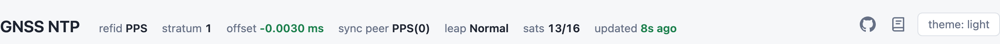
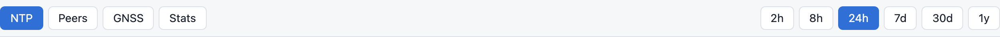
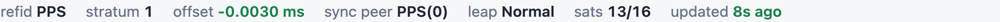
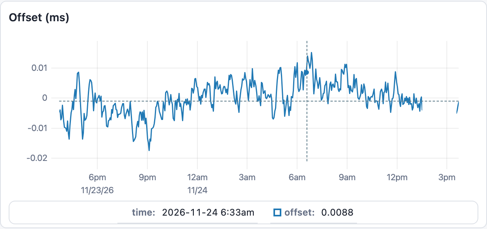
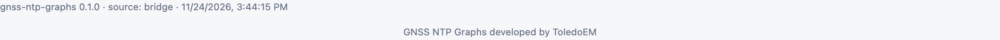

Reading the graphs¶
The page has a header with a live status line, a row of section tabs and range buttons, and the graphs of the chosen section.


Status line¶
The status line shows the newest readings from data/current.json. It does not follow the range buttons.

| Field | Meaning |
|---|---|
| refid | Reference the server is locked to. PPS or GPS for a receiver, an IP address when it follows another server |
| stratum | 1 when locked to the receiver. Higher means it follows a network server. 16 or 0 means not synchronised |
| offset | System clock offset from its reference, in the offset unit |
| sync peer | The peer marked * in the peer table, or none |
| leap | Leap second status: Normal, Insert second, Delete second or Not synchronised |
| sats | Satellites used / visible in the latest gpsd SKY report |
| updated | Seconds since the collector last wrote current.json |
Two fields change colour:
| Field | Green | Amber | Red |
|---|---|---|---|
| offset | below offset_warn_ms (1 ms) |
below offset_bad_ms (10 ms) |
at or above offset_bad_ms |
| updated | up to stale_warn_s (120 s) |
up to stale_bad_s (300 s) |
over stale_bad_s |
The limits are configurable. A red "updated" means the collector has stopped writing, or the browser cannot reach the files. The page works out the age from the viewer's own clock, so a badly set clock on the viewing device also shows up here.
If the page cannot load current.json at all, the status line shows No data yet: followed by the error, for example current.json: 404 before the first export.
Tabs and ranges¶
The tabs switch between the NTP, Peers, GNSS and Stats sections. The address bar follows the tab (#ntp, #peers, #gps, #stats), so you can bookmark a section. With layout = "single" all sections sit on one page and the buttons scroll to them.
The range buttons pick the time span: 2 hours, 8 hours, 24 hours, 7 days, 30 days or 1 year. Each range averages samples into buckets:
| Range | Bucket | Storage tier read |
|---|---|---|
| 2h | 30 s | raw |
| 8h | 1 min | raw |
| 24h | 3 min | raw |
| 7d | 20 min | raw |
| 30d | 1 h | 5-minute averages |
| 1y | 6 h | hourly averages |
Longer ranges therefore smooth out short spikes. Zoom into a shorter range to see them. A bucket with no samples is left empty, so outages show as gaps in the line. The Stats tab has its own 24h and 7d buttons and hides the range buttons.
Using a graph¶
- Hover over a graph to read exact values in the legend below it.
- Drag across a graph to zoom the time axis. Double-click to zoom back out.
- Click a legend entry to hide or show that line.
- The page reloads its data every 60 seconds. Resizing the window redraws the graphs.

The theme button cycles through auto, light and dark. The browser remembers the choice, along with the last tab and range.
Footer¶
The footer shows the collector version, the source type (bridge or local) and when the shown data was written.
